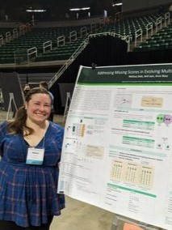
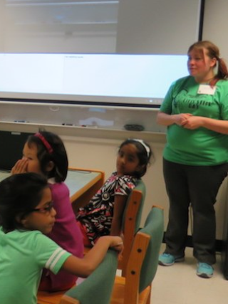

EDUCATION
Michigan State University
2016 – 2024
PhD Candidate: Computer Science and Engineering
Information Fusion, Machine Learning, AutoML, Computer Vision
Montana State University
2011 – 2014
Master of Science: Computer Science
Montana State University
2006 – 2011
Undergraduate, Magnum Cum Laude:
BS in Computer Science
BA in Modern Languages (Spanish)
Minor in Physics

PUBLICATIONS
To Impute or Not: Recommendations for Multibiometric Fusion
WIFS 2023
Dale M., Singer E., Borgström B., Ross A.
IEEE International Workshop on Information Forensics AND Security (WIFS), Germany December 2023.
On the Design of the MITLL Trimodal Dataset for Identity Verification
IWBF 2023
Singer E., Borgström B. J., Alperin K., Nguyen T., Dagli C., Dale M., & Ross, A.
IEEE 11th International Workshop on Biometrics and Forensics (IWBF), Barcelona April 2023
Addressing Missing Scores in Evolving Multibiometric Systems
ICPR 2022
Dale M., Jain A., Ross A.
26th International Conference on Pattern Recognition (ICPR), Canada, August 2022.
Fusing AutoML Models: A Case Study in Medical Image Classification
ICPRAI 2022
Dale M., Ross A., Shapiro E.
3rd International Conference on Pattern Recognition and Artificial Intelligence (ICPRAI), France, June 2022.
Impacts of Design Pattern Decay on System Quality
ESEM 2014
Dale M., Izurieta C.
8th ACM-IEEE International Symposium on Empirical Software Engineering and Measurement, Torino, September 2014.

EXPERIENCE
Research Assistant
2016-PRESENT
iPRoBe Lab @ Michigan State University
I specialize in enhancing machine learning performance on complex and unique datasets through the application of information fusion techniques. Within my research, I have dedicated my efforts to unraveling the intricacies and developing advanced methodologies for high-level information fusion, specifically tailored for classification tasks.
Technologies: Python (Scikit-Learn, Pandas, Auto Tuned Models (ATM)), R
Teaching Assistant, Instructor
2014-2020
Montana State University, Michigan State University
In this role, I have had the opportunity to improve technical communication and gain experience in reviewing and debugging code, in addition to reviewing foundation topics. As an instructor, I created lesson plans, homework, tests, and projects. I strived to create material that was accessible to students with multiple different learning styles and abilities.
Classes: Web Design, Introduction to Java, Data Structures and Algorithms, Introduction to Programming II, Introduction to Biometrics, Discrete Mathematics, Social and Ethical Issues in Computing.
Research Assistant
2012-2016
Software Engineering Lab @ Montana State University
My research focused on design patterns and their impact on software quality, including the study of architecture and its effect on technical debt.
Technologies: Java, R
XBRL Services Software Engineer Intern: Webfilings (currently Workiva)
2013-2014
iPRoBe Lab @ Michigan State University
As an intern, I was given my own project that involved changing over an entire system of legacy code to a new language. I refactored over 9,960 lines of code across 30 files to a more maintainable and readable structure, with fewer than 100 lines in 2 files.
Technologies: XBRL, Java, and Python
PROJECTS
Score Fusion App
2020
This app provides a comprehensive set of tools to evaluate score fusion on biometric data, including score normalization, data distributions & visualizations.
Technologies: Python: Kivy, Pandas, Scikit Learn, Matplotlib
Grime Injector
2014
A Java-based tool designed to analyze and model the accumulation of non-pattern-related code within software projects.
Technologies: Java, SonarQube, JAD: (Java Decompiler), Javassist

Personal
Your Education Description Here